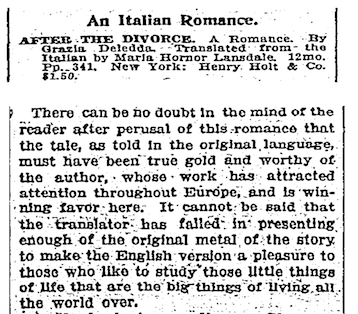
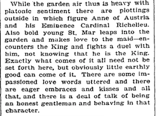
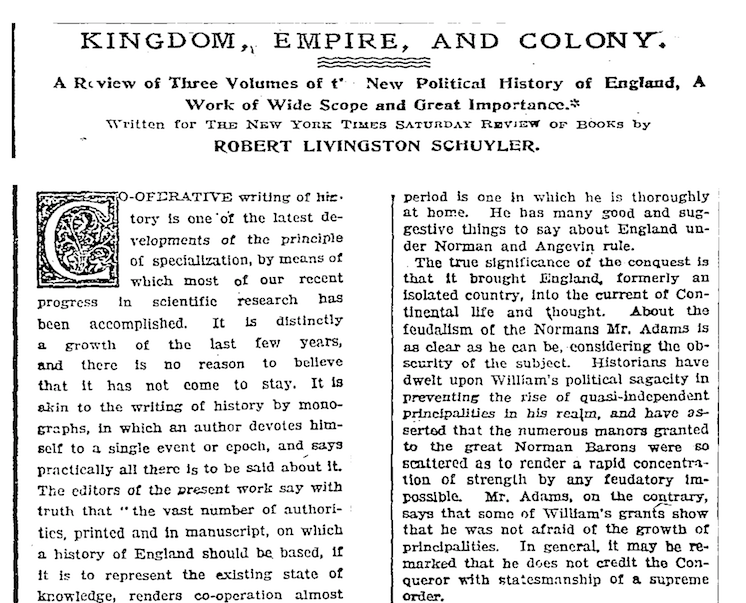
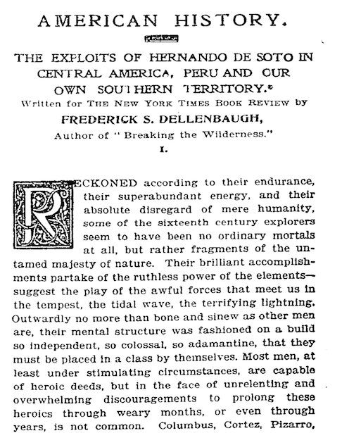
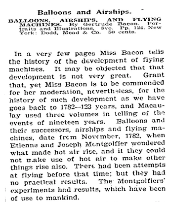
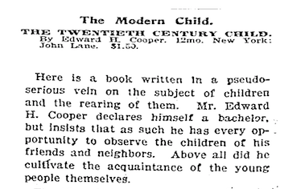
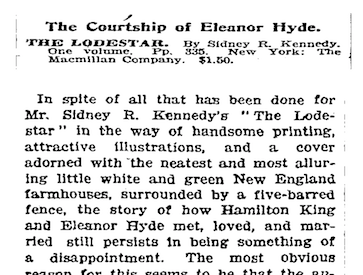

class: middle # Computational Book History <br/> <br/> ## A Pilot Study of <em>The New York Times</em><br/> and Early 20th-century Reading <br /> ## Examples from Reviews <br/> <br/> #### Matthew Lavin #### Clinical Assistant Professor of English #### Director of Digital Media Lab #### University of Pittsburgh #### February 2018 --- class: middle <h2 class="performance">Archetypal Review</h2>  - Author is perceived female by reviewer, machine model guesses female - Positive sentiment features --- class: middle <h2 class="performance">Archetypal Review</h2>  - Author is perceived female by reviewer, machine model guesses female - All sentiment features --- class: middle <h2 class="performance">Archetypal Review</h2>  - Author is perceived male by reviewer, machine model guesses male - Stopwords, pronouns, and forenames removed --- class: middle <h2 class="performance">Archetypal Review</h2>  - Author is perceived male by reviewer, machine model guesses male - All sentiment features --- class: middle <h2 class="performance">Outlier Review</h2> - Author is perceived female by reviewer, machine model guesses male - Stopwords, pronouns, and forenames removed --- class: middle <h2 class="performance">Outlier Review</h2>  - Author is perceived female by reviewer, machine model guesses male - Positive sentiment features --- class: middle <h2 class="performance">Outlier Review</h2>  - Author is perceived male by reviewer, machine model guesses female - All sentiment features --- class: middle <h2 class="performance">Outlier Review</h2>  - Author is perceived male by reviewer, machine model guesses female - Negative sentiment features --- class: middle <h2 class="performance">Ambiguous Review</h2> - Author is perceived female by reviewer, machine model goes back and forth depending on the training set - Stopwords, pronouns, and forenames removed --- class: middle <h2 class="performance">Ambiguous Review</h2> - Author is perceived male by reviewer, machine model goes back and forth depending on the training set - Negative sentiment features